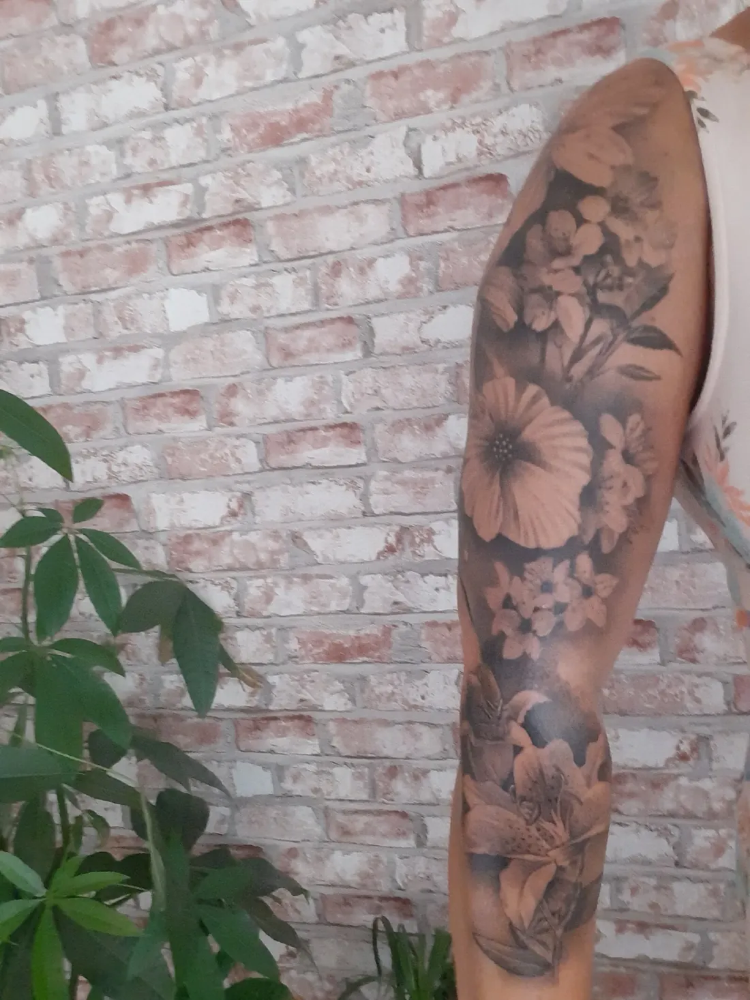
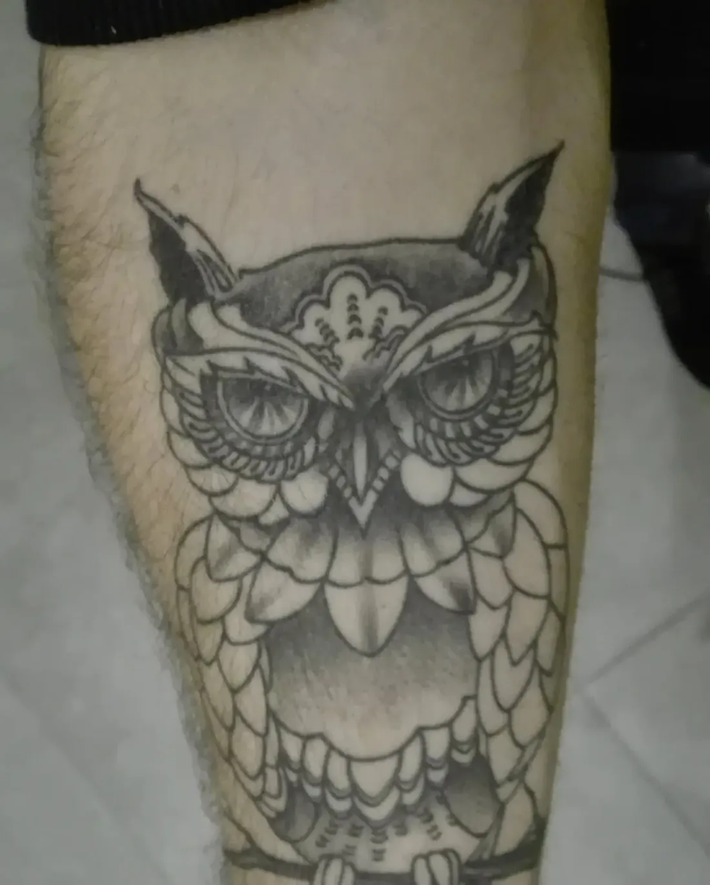
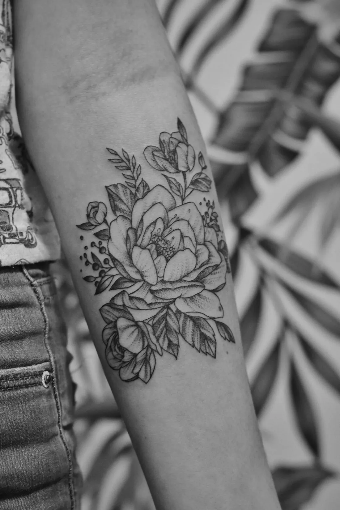
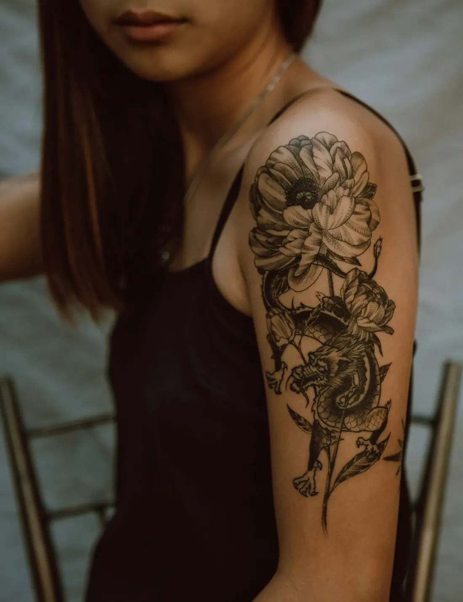
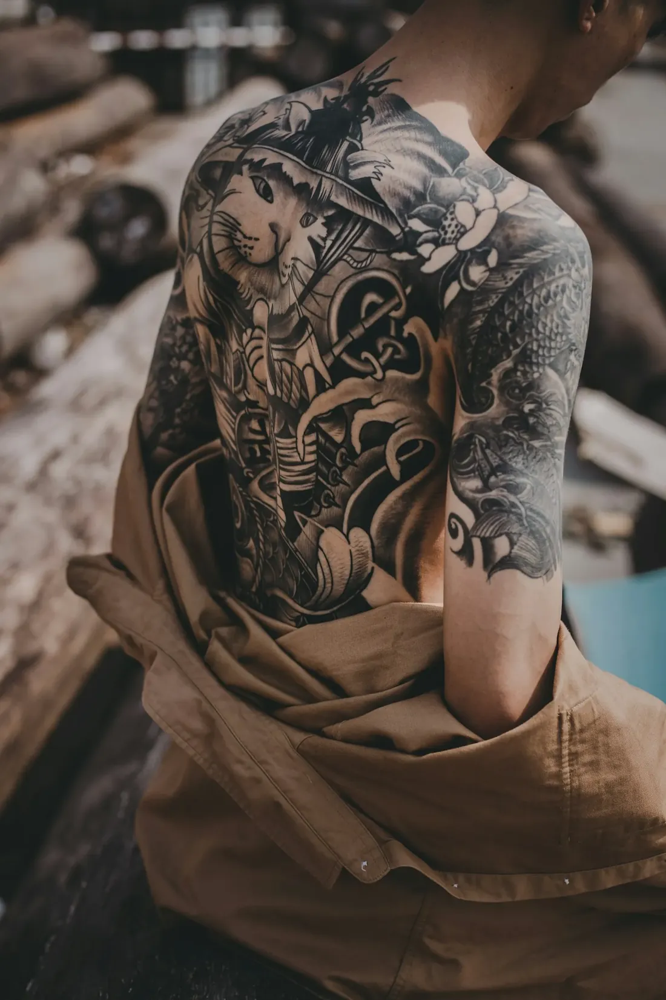
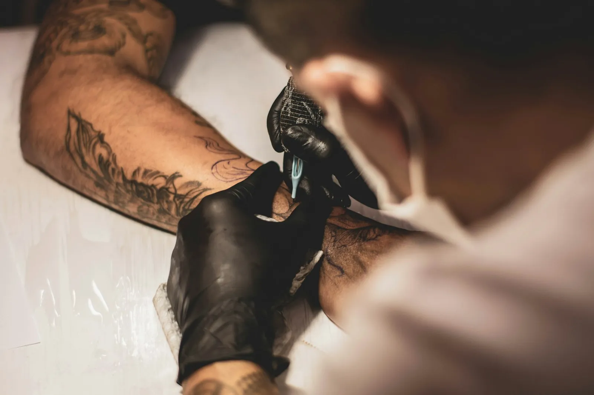
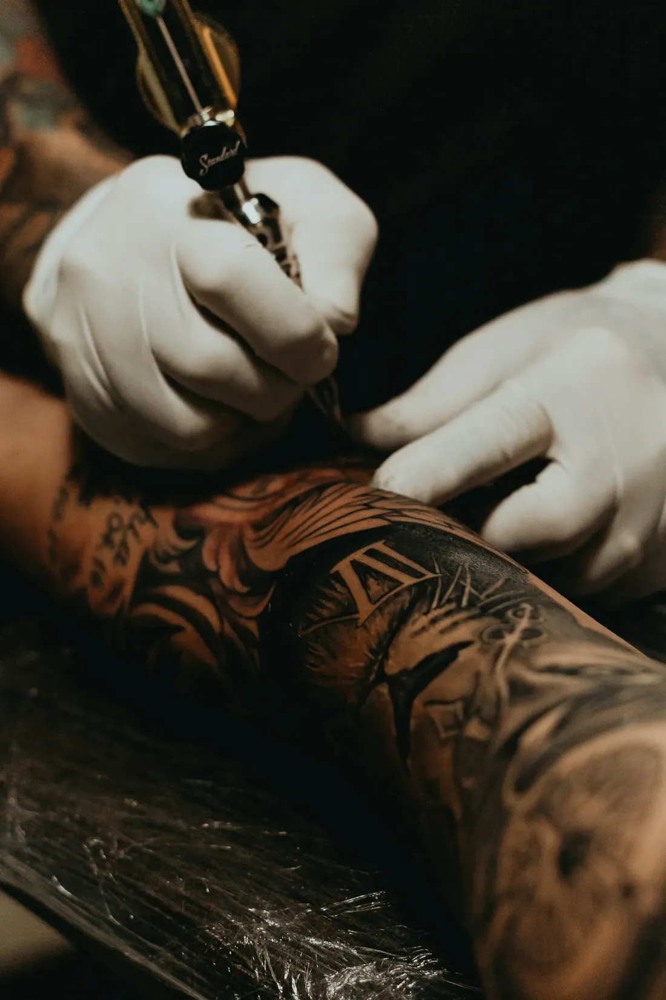

Een tattoo zet je maar één keer.
Dus laat je hem zetten door iemand die er de tijd voor neemt. Davy tekent je idee uit, zet het met een vaste hand en legt je achteraf rustig uit hoe je het goed verzorgt.

Geen lopende band. Eén artiest, één afspraak, en alle aandacht voor wat er op jouw huid komt.
Lijnen die blijven staan.
Fijne bloemen, dieren, schaduw die zacht verloopt. Elk stuk wordt getekend voor de persoon die het draagt, en voor de plek waar het komt.




Van idee tot huid.
Twijfel je nog over stijl of plek? Dat is helemaal normaal. Daar is het eerste gesprek net voor.
Je idee
Stuur een bericht met wat je in gedachten hebt. Een schets, een paar voorbeelden of gewoon een gevoel: alles helpt.
Het ontwerp
Davy tekent het uit op maat van jou en van de plek. Klopt iets nog niet, dan schaaf je er samen aan.
De afspraak
Je krijgt een vast moment. Dan wordt er rustig gewerkt, zonder haast en met de tijd die jouw stuk vraagt.
Verzorging
Je gaat naar huis met duidelijke uitleg over de verzorging, zodat je tattoo mooi heelt en scherp blijft.

Goed werk vraagt wat geduld.
De agenda zit vaak een tijdje vol. Dat is geen toeval: wie hier ooit iets liet zetten, komt meestal terug voor het volgende stuk.
Plan dus op tijd, zeker als je tattoo er voor een bepaalde datum moet staan.
- Eigen ontwerp, geen kopie van een ander
- Proper en steriel gewerkt, zoals het hoort
- Uitleg over verzorging na elke sessie

Iets kleins erbij? Kan ook.
Naast tattoos zet Davy ook piercings. Zelfde aanpak: eerst even bekijken wat bij je past, dan rustig en hygiënisch zetten.
Vraag gerust na wat mogelijk is als je een afspraak maakt. Combineren met een tattoo-afspraak kan vaak ook.
Vraag het even★★★★★“Al mijn tattoo's komen van bij hem en zijn super gezet! 1 keer ergens anders geweest en zoveel spijt van! Nu heb ik 6 prachtige tattoos en 1 echt slechte van iemand anders”
★★★★★“Zeer goede artiest, zeer vriendelijk en geef achteraf goede informatie ivm verzorgen. (...) Kortom is een aanrader!”
Vertel wat je in gedachten hebt.
Een berichtje met je idee, de plek en ongeveer de grootte is genoeg om te starten. Davy laat weten wanneer er plaats is.
9200 Dendermonde
Alleen op afspraak. Kom dus niet zomaar langs, maar stuur eerst even een bericht.